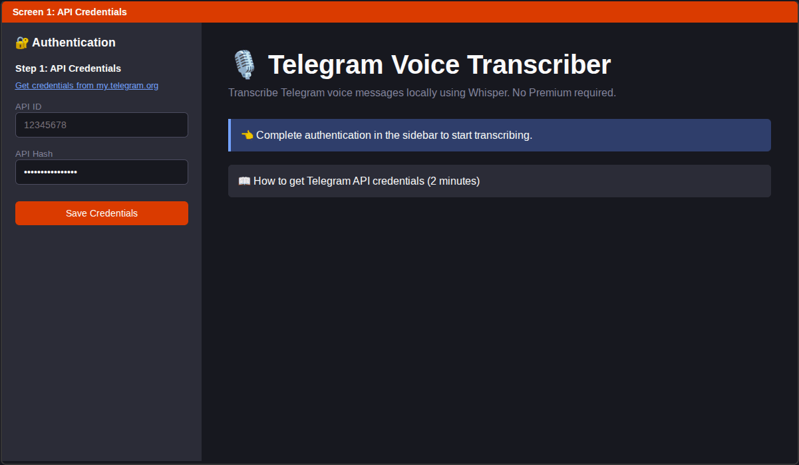

Login and API credential flow
Local-first Telegram voice transcription workflow with Streamlit UI and CLI. No Telegram Premium required.
This Vercel page showcases the real app flow and links to source + local run instructions.



This app performs real transcription locally (Python + Whisper). Quickstart:
python3 -m pip install -e '.[dev]' && streamlit run app.py